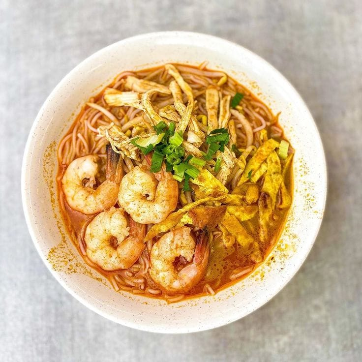
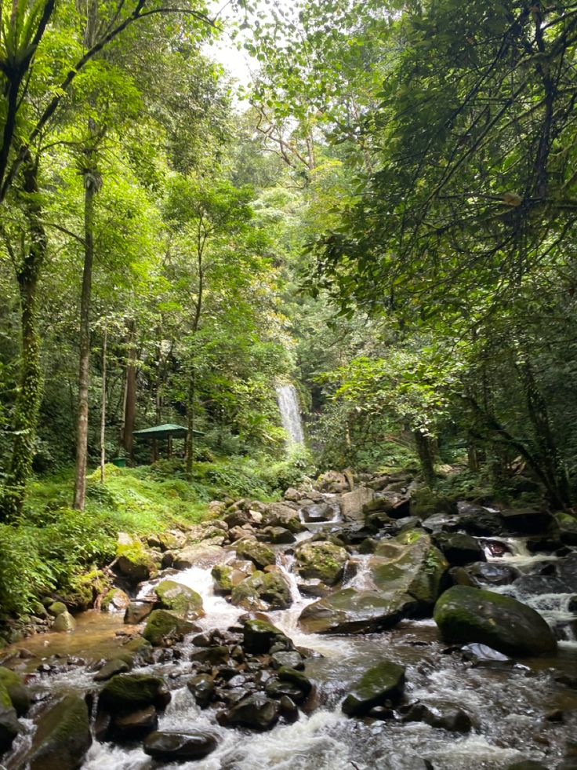
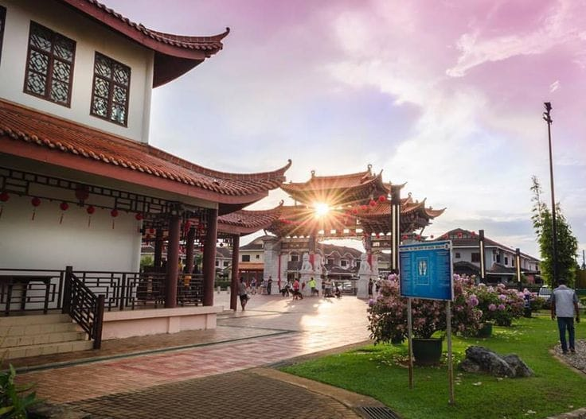

My Favourite Food & Place ♡
Everyone has their own favourite food and place that brings happiness and comfort to their life. In this section, I would like to share two of my favourite foods and two places that I love. These little things make my life more enjoyable and create beautiful memories.
My Favourite Food 𐙚
Food is one of the things that can make me happy. I enjoy eating delicious meals and sharing food with my family and friends. Here are two of my favourite foods.

1. My Favourite Food ♡
Food Name: Laksa Sarawak
I love this food because it tastes delicious and always makes me happy whenever I eat it. It is one of the foods I never get tired of.
2. Another Favourite Food ♡
Food Name: Sabah Chili Pan Mee
This is another food that I really enjoy. I love its taste, and eating it always brings me happiness and satisfaction.
My Favourite Places ✧
Besides food, I also have places that I love to visit. These places allow me to relax, have fun, and spend quality time with the people who are important to me.

1. My Favourite Place ♡
Place Name: Mahua Waterfall, Tambunan, Sabah
This place is special to me because I feel comfortable and happy whenever I visit. It is a wonderful place to relax and enjoy my free time.

2. Another Special Place ♡
Place Name: Taman Sahabat, Kuching, Sarawak
I enjoy visiting this place because it gives me a chance to relax, have fun, and create wonderful memories with my loved ones.
Why They Are Special to Me 𐙚
My favourite foods and places are special because they bring happiness into my everyday life. Whether I am enjoying a delicious meal or visiting a place I love, these simple experiences make life more meaningful.
I believe happiness can be found in the little things, such as enjoying good food, discovering beautiful places, and spending precious moments with the people I care about. These are the memories I will always treasure. ♡
A Little Reminder ✧
"Good food, beautiful places, and precious memories make life sweeter." ♡